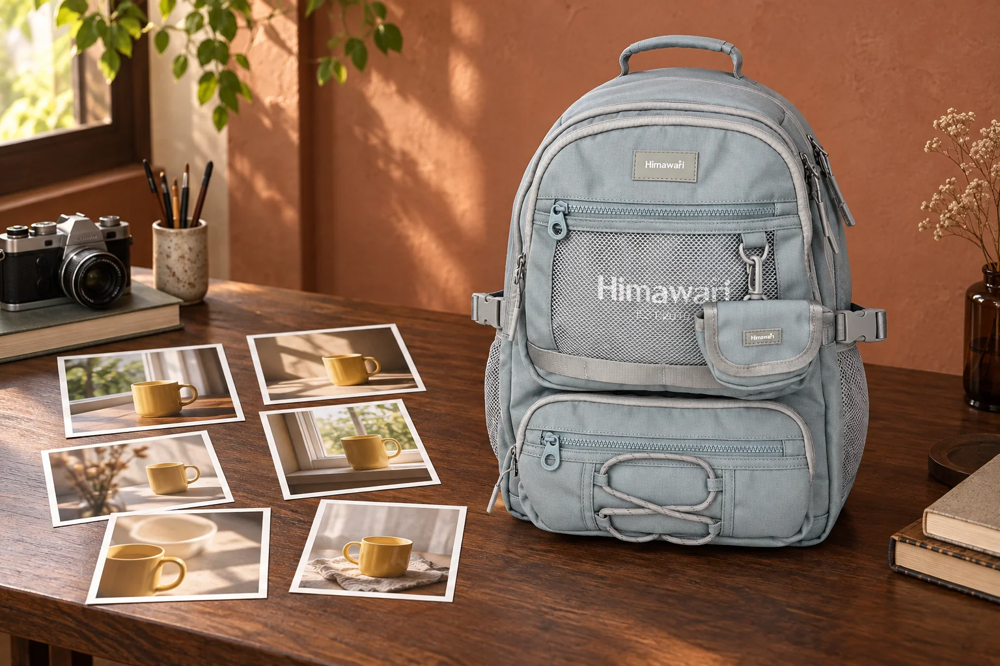
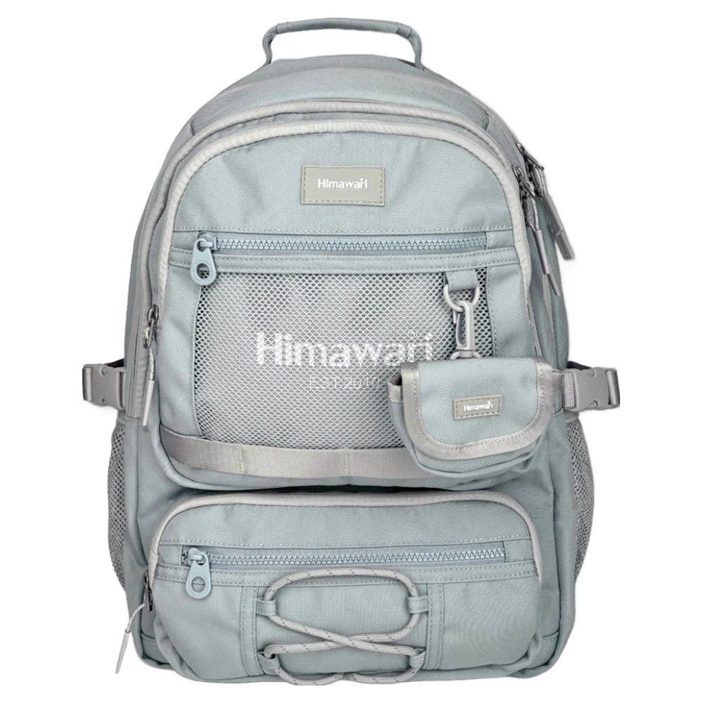

높이가 긴 백팩, 위쪽 공간을 어떻게 쓸까

세로가 긴 백팩 안에 작은 파우치만 넣으면 위쪽이 비어 보입니다. 그 공간을 쓰려고 물건을 하나씩 더 얹다 보면 아래쪽에 둔 지갑을 꺼낼 때 전부 옮겨야 할 수 있습니다. 큰 가방에서 남는 여유는 짐을 더 담을 가능성이지만, 그대로 남겨두면 손이 지나갈 길이 되기도 합니다. 높이가 긴 백팩을 고를 때에는 꼭대기까지 채울 수 있는지와 자주 쓰는 물건을 어디서 꺼낼지를 함께 생각해봅니다.
긴 파일 하나를 세워 넣는 날과 짧은 케이스 여러 개를 담는 날은 같은 세로 공간을 다르게 씁니다. 앞의 경우에는 한 물건이 위아래를 길게 차지합니다. 뒤의 경우에는 물건 사이에 층이 생깁니다. 바깥 높이가 같다는 사실만으로 두 구성이 같은 사용이 되지는 않습니다. 가방을 고르기 전에 평소 짐이 어느 쪽에 가까운지 봅니다. 큰 세로 수치가 필요한 이유를 구체적으로 말할 수 있게 됩니다.

높이 45cm가 알려주는 것
Himawari No.9291의 확인된 외부 크기는 가로 31 × 세로 45 × 폭 15cm입니다. 실제 제품 사진에는 위쪽의 둥근 외곽과 손잡이, 앞면에 여러 크기로 나뉘어 보이는 부분이 있습니다. 이 사진에서 몸체가 세로로 이어지는 형태를 읽을 수 있습니다. 외부 높이 45cm는 내부의 빈 높이를 뜻하지 않으므로 긴 파일을 넣으려면 실제 입구와 사용할 공간을 별도로 확인합니다. 앞면의 각 부분이 내부에서 어떻게 연결되는지도 제품 안내와 함께 봅니다.
현재 쓰는 백팩과 비교할 때에는 세로 방향이 어디에서 늘어나는지 생각할 수 있습니다. 입구 가까이의 공간을 더 갖고 싶은지, 긴 물건이 놓일 자리가 필요한지에 따라 같은 높이 차이가 다른 의미가 됩니다. 낮은 가방에서 윗부분이 여밈에 닿았던 물건이 있다면 그 물건의 실제 외곽을 남겨둘 수 있습니다. 상품의 세로 수치가 커졌다는 이유만으로 적합성을 확정하기보다 어떤 여유를 더 확인할지 질문을 만듭니다.
가방을 메었을 때 윗선과 아랫선이 어느 위치에 놓이는지도 별도의 비교입니다. 세로 공간이 필요해서 긴 후보를 골랐다면 평소 짐을 넣은 상태로 메고 벗어봅니다. 책상 옆이나 의자에 둘 때 몸체가 놓일 높이도 이어집니다. 같은 물건을 담는 데 필요한 크기와 사용 장소에서 다루기 편한 외곽을 함께 남겨야 합니다. 높은 숫자 하나가 선택을 끝내주기보다 두 조건을 연결하는 자료가 됩니다.
긴 물건 한 개가 세워져 있을 때
세로로 긴 파일을 넣는다면 그 물건 옆의 공간을 어떻게 사용할지 봅니다. 파일 윗부분이 높게 남아 있어도 옆에 낮은 파우치가 놓일 수 있습니다. 그 파우치를 꺼낼 때 손이 내려갈 길이 있는지, 파일을 먼저 움직여야 하는지 확인하면 됩니다. 가방 위쪽이 비어 보였더라도 가장 필요한 소품은 아래에 놓일 수 있습니다. 가방의 빈 높이와 작은 물건의 접근 여유를 구별해야 하는 장면입니다.
파일 위에 다른 물건을 얹는 구성을 택하면 가방을 닫을 때 만나는 높이도 달라집니다. 처음에는 정상적으로 닫혔던 여밈이 천 소품 하나를 더한 뒤 당겨질 수 있습니다. 파일의 높이는 그대로여도 그 위의 물건이 입구가 움직일 자리를 차지한 것입니다. 위쪽 여유를 쓰려면 어떤 물건을 어디에 놓았는지 읽어야 합니다. 짐의 높이를 강하게 눌러 맞추기보다 배치나 가져갈 묶음을 바꾸어볼 수 있습니다.
긴 물건을 하루에 여러 번 꺼낼 계획이라면 그 윗부분을 잡을 자리도 필요합니다. 작은 파우치가 입구 가까이 있어 편해졌지만 파일의 손잡이나 잡을 면을 가리게 될 수 있습니다. 두 물건을 각각 꺼내보며 어느 쪽을 더 자주 사용하는지에 맞춰 길을 남깁니다. 모든 물건이 같은 정도로 쉽게 나올 필요는 없지만 중요한 순서가 자신의 하루와 맞아야 합니다.
짧은 묶음이 여러 층으로 놓일 때
작은 케이스 여러 개를 위아래로 놓으면 빈 가방의 높이를 사용할 수 있습니다. 대신 아래 묶음을 꺼낼 때 위의 물건을 둘 자리가 생겨야 합니다. 집의 큰 책상에서는 가능했던 동작이 이동 중 작은 좌석에서는 번거로울 수 있습니다. 백팩에 최대한 많이 담는 장면과 필요한 묶음을 하나씩 사용하는 장면을 따로 보면 어떤 공간을 비워둘지 정하기 쉽습니다. 위쪽 여유가 그 정리의 완충 공간이 될 수도 있습니다.
자주 꺼낼 작은 물건이 아래로 내려간다면 깊이가 얕은 사용 가능 칸을 확인할 수 있습니다. 또는 가방 구조가 허용하는 위치에 한 묶음으로 둘 수 있습니다. 어떤 내부 걸이나 고정 장치가 있는지는 실제 제품에서 확인해야 합니다. 사진에서 보이지 않는 부품을 기대하기보다 현재 확인된 수납 구조 안에서 길을 고릅니다. 높은 몸체를 제대로 쓰는 방법은 새 기능을 더하는 일과 다릅니다.
위쪽을 비워 두는 선택도 사용 목적에 맞을 수 있습니다. 출근 때는 적은 짐이지만 돌아올 때 큰 물건이 생기는 일정이라면 그 자리를 남겨둡니다. 일정한 양만 담는 사람은 더 낮은 후보와 비교할 수 있습니다. 평소 쓰지 않는 공간을 위해 큰 외곽을 갖고 다니는 것이 어떤 의미인지 판단하는 것입니다. 현재 크기를 유지하면서 위쪽은 비워 쓰고, 큰 짐이 있는 날에 그 여유를 사용할 수도 있습니다.
가방을 골랐다면 실제로 사용하는 날의 빈 높이를 한 번 살펴봅니다. 그것이 여밈을 위한 자리인지, 손을 넣는 길인지, 나중에 담을 물건의 자리인지 알 수 있으면 됩니다. No.9291의 큰 세로 수치는 그 역할을 고르는 출발점입니다. 긴 파일이 있는 날과 짧은 묶음만 있는 날을 나란히 두면 자신에게 필요한 높이가 드러납니다. 다음 후보에서는 높이가 더 큰가에 앞서 그 위쪽을 어떻게 쓸 것인지부터 묻게 됩니다.